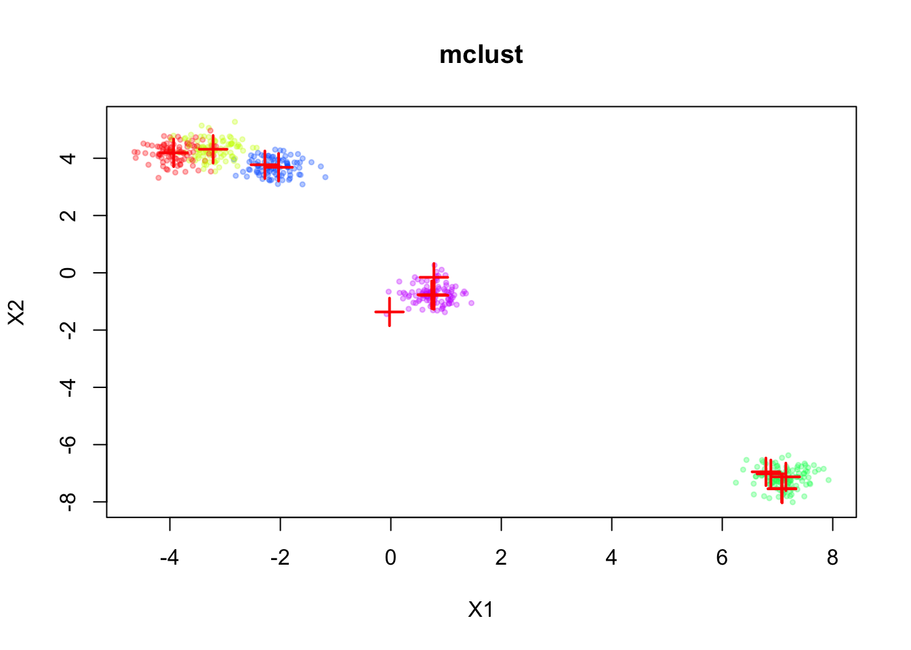
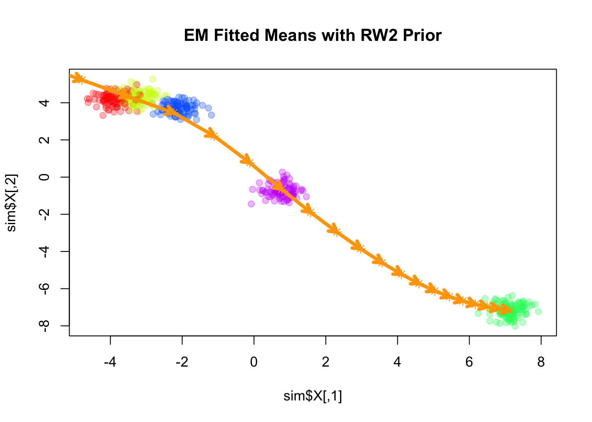

Exploring smooth-EM algorithm with various priors
Ziang Zhang
2025-07-07
Last updated: 2025-07-10
Checks: 7 0
Knit directory: InferOrder/
This reproducible R Markdown analysis was created with workflowr (version 1.7.1). The Checks tab describes the reproducibility checks that were applied when the results were created. The Past versions tab lists the development history.
Great! Since the R Markdown file has been committed to the Git repository, you know the exact version of the code that produced these results.
Great job! The global environment was empty. Objects defined in the global environment can affect the analysis in your R Markdown file in unknown ways. For reproduciblity it’s best to always run the code in an empty environment.
The command set.seed(20250707) was run prior to running
the code in the R Markdown file. Setting a seed ensures that any results
that rely on randomness, e.g. subsampling or permutations, are
reproducible.
Great job! Recording the operating system, R version, and package versions is critical for reproducibility.
Nice! There were no cached chunks for this analysis, so you can be confident that you successfully produced the results during this run.
Great job! Using relative paths to the files within your workflowr project makes it easier to run your code on other machines.
Great! You are using Git for version control. Tracking code development and connecting the code version to the results is critical for reproducibility.
The results in this page were generated with repository version 3298282. See the Past versions tab to see a history of the changes made to the R Markdown and HTML files.
Note that you need to be careful to ensure that all relevant files for
the analysis have been committed to Git prior to generating the results
(you can use wflow_publish or
wflow_git_commit). workflowr only checks the R Markdown
file, but you know if there are other scripts or data files that it
depends on. Below is the status of the Git repository when the results
were generated:
Ignored files:
Ignored: .DS_Store
Ignored: .Rhistory
Ignored: .Rproj.user/
Ignored: analysis/.DS_Store
Unstaged changes:
Modified: analysis/explore_pancrea.rmd
Modified: code/general_EM.R
Modified: code/general_EM_obs.R
Modified: code/linear_EM.R
Note that any generated files, e.g. HTML, png, CSS, etc., are not included in this status report because it is ok for generated content to have uncommitted changes.
These are the previous versions of the repository in which changes were
made to the R Markdown (analysis/explore_smoothEM.rmd) and
HTML (docs/explore_smoothEM.html) files. If you’ve
configured a remote Git repository (see ?wflow_git_remote),
click on the hyperlinks in the table below to view the files as they
were in that past version.
| File | Version | Author | Date | Message |
|---|---|---|---|---|
| Rmd | 3298282 | Ziang Zhang | 2025-07-10 | workflowr::wflow_publish("analysis/explore_smoothEM.rmd") |
| Rmd | 041218f | Ziang Zhang | 2025-07-09 | add result using smoothEM |
| html | 041218f | Ziang Zhang | 2025-07-09 | add result using smoothEM |
| html | 2322978 | Ziang Zhang | 2025-07-08 | Build site. |
| html | 028201f | Ziang Zhang | 2025-07-08 | Build site. |
| Rmd | ccaa320 | Ziang Zhang | 2025-07-07 | workflowr::wflow_publish("analysis/explore_smoothEM.rmd") |
Introduction
In this study, we consider a mixture model with \(K\) components, specified as follows: \[\begin{equation} \label{eq:smooth-EM} \begin{aligned} \boldsymbol{X}_i \mid z_i = k &\sim \mathcal{N}(\boldsymbol{\mu}_k, \boldsymbol{\Sigma}_k) \quad i\in [n], \\ \boldsymbol{U} = (\boldsymbol{\mu}_1, \ldots, \boldsymbol{\mu}_K) &\sim \mathcal{N}(\boldsymbol{0}, \mathbf{Q}^{-1}), \end{aligned} \end{equation}\] where \(\boldsymbol{X}_i \in \mathbb{R}^d\) denotes the observed data, \(z_i \in [K]\) is a latent indicator assigning observation \(i\) to component \(k\), \(\boldsymbol{\mu}_k \in \mathbb{R}^d\) is the mean vector of component \(k\), and \(\boldsymbol{\Sigma}_k \in \mathbb{R}^{d\times d}\) is its covariance matrix.
The prior distribution over the stacked mean vectors \(\boldsymbol{U}\) is multivariate normal with mean zero and precision matrix \(\mathbf{Q}\). This prior can encode smoothness or structural assumptions about how the component means evolve or are ordered (e.g., spatial or temporal constraints across \(k=1,\ldots,K\)).
Rather than using the standard EM algorithm, we employ a smooth-EM approach that incorporates this structured prior over component means. In this framework:
E-step (standard): \[ \gamma_{ik}^{(t)} = \frac{\pi_k^{(t)} \, \mathcal{N}(\boldsymbol{X}_i \mid \boldsymbol{\mu}_k^{(t)}, \boldsymbol{\Sigma}_k^{(t)})}{\sum_{j=1}^K \pi_j^{(t)} \, \mathcal{N}(\boldsymbol{X}_i \mid \boldsymbol{\mu}_j^{(t)}, \boldsymbol{\Sigma}_j^{(t)})}. \]
M-step (incorporating prior): \[ \begin{aligned} \{\pi^{(t+1)}, \mathbf{U}^{(t+1)}, \boldsymbol{\Sigma}^{(t+1)}\} &= \arg\max \, \mathbb{E}_{\gamma^{(t)}}\Big[\log p(\boldsymbol{X}, \mathbf{U}, \mathbf{Z} \mid \pi, \boldsymbol{\Sigma})\Big] \\ &= \arg\max \, \mathbb{E}_{\gamma^{(t)}}\Big[\log p(\boldsymbol{X}, \mathbf{Z} \mid \pi, \mathbf{U}, \boldsymbol{\Sigma}) + \log p(\mathbf{U})\Big] \\ &= \arg\max \, \bigg\{\mathbb{E}_{\gamma^{(t)}}\Big[\log p(\boldsymbol{X}, \mathbf{Z} \mid \pi, \mathbf{U}, \boldsymbol{\Sigma})\Big] - \frac{1}{2} \mathbf{U}^\top \mathbf{Q} \mathbf{U}\bigg\} \\ &= \arg\max \, \left\{ -\frac{1}{2} \sum_{i,k} \gamma_{ik}^{(t)} \|\boldsymbol{X}_i - \boldsymbol{\mu}_k\|^2_{\boldsymbol{\Sigma}_k^{-1}} - \frac{1}{2} \mathbf{U}^\top \mathbf{Q} \mathbf{U}\right\}. \end{aligned} \]
Unlike the standard EM algorithm, which maximizes the likelihood independently over component means, the smooth-EM algorithm performs MAP estimation that considers the prior of \(\boldsymbol{U}\), encouraging ordered or smooth transitions across components indexed by \(k\).
We will now explore how this smooth-EM algorithm behaves under different prior specifications for \(\mathbf{Q}\).
Simulate mixture in 2D
Here, we will simulate a mixture of Gaussians in 2D, for \(n = 500\) observations and \(K = 5\) components.
source("./code/simulate.R")
library(MASS)
library(mvtnorm)Warning: package 'mvtnorm' was built under R version 4.3.3palette_colors <- rainbow(5)
alpha_colors <- sapply(palette_colors, function(clr) adjustcolor(clr, alpha.f=0.3))
sim <- simulate_mixture(n=500, K = 5, d=2, seed=123, proj_mat = matrix(c(1,-0.6,-0.6,1), nrow = 2, byrow = T))plot(sim$X, col = alpha_colors[sim$z],
pch = 19, cex = 0.5,
xlab = "X1", ylab = "X2",
main = "Simulated mixture of Gaussians in 2D")
| Version | Author | Date |
|---|---|---|
| 028201f | Ziang Zhang | 2025-07-08 |
Now, let’s assume we don’t know there are five components, and we will fit a mixture model with \(K = 20\) components to this data. For simplicity, let’s assume \(\mathbf{\Sigma}_k = \sigma^2 \mathbf{I}\) for all \(k\), where \(\sigma^2\) is a constant variance across components.
Fitting regular EM
First, we fit the standard EM algorithm to this mixture model without any prior on the means.
library(mclust)Package 'mclust' version 6.1.1
Type 'citation("mclust")' for citing this R package in publications.
Attaching package: 'mclust'The following object is masked from 'package:mvtnorm':
dmvnormfit_mclust <- Mclust(sim$X, G=20, modelNames = "EEI")plot(sim$X, col=alpha_colors[sim$z],
xlab="X1", ylab="X2",
cex=0.5, pch=19, main="mclust")
mclust_means <- t(fit_mclust$parameters$mean)
points(mclust_means, pch=3, cex=2, lwd=2, col="red")
| Version | Author | Date |
|---|---|---|
| 028201f | Ziang Zhang | 2025-07-08 |
The inferred means are shown in red. We can see that the means are well aligned with the true component means, but we don’t have a natural ordering of the means.
Fitting smooth-EM with a linear prior
We consider the simplest case for the prior on the component means \(\mathbf{U}\), where \(\mathbf{Q}\) corresponds to a linear trend prior. Specifically, we assume that \[ \boldsymbol{\mu}_k = l_k \boldsymbol{\beta}, \] for some shared slope vector \(\boldsymbol{\beta} \in \mathbb{R}^d\), with \(\{l_k\}\) being equally spaced values increasing from \(-1\) to \(1\).
source("./code/linear_EM.R")
source("./code/general_EM.R")Warning: package 'matrixStats' was built under R version 4.3.3result_linear <- EM_algorithm_linear(
data = sim$X,
K = 20,
betaprec = 0.001,
seed = 123,
max_iter = 100,
verbose = TRUE
)Iteration 1: objective = -2741.247096
Iteration 2: objective = -2556.265957
Iteration 3: objective = -2368.973053
Iteration 4: objective = -2159.332551
Iteration 5: objective = -1872.947089
Iteration 6: objective = -1586.908025
Iteration 7: objective = -1382.252276
Iteration 8: objective = -1277.268346
Iteration 9: objective = -1236.296149
Iteration 10: objective = -1218.570070
Iteration 11: objective = -1210.506912
Iteration 12: objective = -1206.925206
Iteration 13: objective = -1205.281111
Iteration 14: objective = -1204.472725
Iteration 15: objective = -1204.051511
Iteration 16: objective = -1203.822996
Iteration 17: objective = -1203.695380
Iteration 18: objective = -1203.622527
Iteration 19: objective = -1203.580213
Iteration 20: objective = -1203.555297
Iteration 21: objective = -1203.540464
Iteration 22: objective = -1203.531557
Iteration 23: objective = -1203.526170
Iteration 24: objective = -1203.522895
Iteration 25: objective = -1203.520894
Iteration 26: objective = -1203.519669
Iteration 27: objective = -1203.518915
Iteration 28: objective = -1203.518452
Iteration 29: objective = -1203.518166
Iteration 30: objective = -1203.517989
Iteration 31: objective = -1203.517880
Iteration 32: objective = -1203.517813
Converged at iteration 32 with objective -1203.517813plot(sim$X, col=alpha_colors[sim$z], cex=1,
pch=19, main="EM Fitted Means with linear Prior")
# Turn mu_list into matrix
mu_matrix <- do.call(rbind, as.vector(result_linear$params$mu))
# Draw arrows showing sequence
for (k in 1:(nrow(mu_matrix)-1)) {
arrows(mu_matrix[k,1], mu_matrix[k,2],
mu_matrix[k+1,1], mu_matrix[k+1,2],
col="orange", lwd=4, length=0.1)
}
# add dots for fitted means
points(mu_matrix, pch=1, cex=0.8, lwd=2, col="orange")
Here the fitted means are shown as orange arrows, with direction indicating the order of the components.
Note that the fitted slope \(\boldsymbol{\beta}\) is very close to the first principal component of the data.
plot(sim$X, col=alpha_colors[sim$z], cex=1,
xlab="X1", ylab="X2",
pch=19, main="EM Fitted Means with Linear Prior")
# Turn mu_list into matrix
mu_matrix <- do.call(rbind, result_linear$params$mu)
# Draw arrows showing sequence of cluster means
for (k in 1:(nrow(mu_matrix)-1)) {
if (sqrt(sum((mu_matrix[k+1,] - mu_matrix[k,])^2)) > 1e-6) {
arrows(mu_matrix[k,1], mu_matrix[k,2],
mu_matrix[k+1,1], mu_matrix[k+1,2],
col="orange", lwd=4, length=0.1)
}
}
# ====== Fit PCA ======
pca_fit <- prcomp(sim$X, center=TRUE, scale.=FALSE)
pcs <- pca_fit$rotation # columns are PC directions
X_center <- colMeans(sim$X)
# Set radius for arrows
radius <- 1
# ====== Draw PC arrows ======
arrows(
X_center[1], X_center[2],
X_center[1] + radius * pcs[1,1],
X_center[2] + radius * pcs[2,1],
col="red", lwd=4, length=0.1
)
text(
X_center[1] + radius * pcs[1,1],
X_center[2] + radius * pcs[2,1],
labels="PC1", pos=4, col="red"
)
Fitting smooth-EM with a VAR(1) prior
Next, we consider a first-order vector autoregressive (VAR(1)) prior on the component means. Under this prior, each component mean \(\boldsymbol{\mu}_k\) depends linearly on its immediate predecessor \(\boldsymbol{\mu}_{k-1}\), with Gaussian noise: \[ \begin{aligned} \boldsymbol{\mu}_k &= \mathbf{A} \boldsymbol{\mu}_{k-1} + \boldsymbol{\epsilon}_k, \\ \boldsymbol{\epsilon}_k &\sim \mathcal{N}(\mathbf{0}, \mathbf{Q}_\epsilon^{-1}), \end{aligned} \] where \(\mathbf{A}\) is the transition matrix encoding the dependence of the current mean on the previous mean, and \(\mathbf{Q}_\epsilon\) is the precision matrix of the noise term.
Let’s for now assume the transition matrix \(\mathbf{A}\) and the noise precision matrix \(\mathbf{Q}_\epsilon\) are given by:
\[ \mathbf{A} = 0.8 \, \mathbf{I}_2 \] \[ \mathbf{Q}_\epsilon = 0.1 \, \mathbf{I}_2 \]
where \(\mathbf{I}_2\) is the 2-dimensional identity matrix.
source("./code/prior_precision.R")
Q_prior_VAR1 <- make_VAR1_precision(K=20, d=2, A = diag(2) * 0.8, Q = diag(2) * 0.1)
set.seed(1)
init_params <- make_default_init(sim$X, K=20)
result_VAR1 <- EM_algorithm(
data = sim$X,
Q_prior = Q_prior_VAR1,
init_params = init_params,
max_iter = 100,
modelName = "EEI",
tol = 1e-3,
verbose = TRUE
)Iteration 1: objective = -1816.061482
Iteration 2: objective = -1584.739929
Iteration 3: objective = -1476.102618
Iteration 4: objective = -1402.112627
Iteration 5: objective = -1401.647535
Iteration 6: objective = -1401.536854
Iteration 7: objective = -1401.377684
Iteration 8: objective = -1401.143065
Iteration 9: objective = -1400.794563
Iteration 10: objective = -1400.275018
Iteration 11: objective = -1399.499366
Iteration 12: objective = -1398.341404
Iteration 13: objective = -1396.613967
Iteration 14: objective = -1394.037634
Iteration 15: objective = -1390.187887
Iteration 16: objective = -1384.401471
Iteration 17: objective = -1375.611192
Iteration 18: objective = -1362.103523
Iteration 19: objective = -1341.553522
Iteration 20: objective = -1312.517496
Iteration 21: objective = -1277.611360
Iteration 22: objective = -1248.488954
Iteration 23: objective = -1234.630112
Iteration 24: objective = -1230.153804
Iteration 25: objective = -1228.759121
Iteration 26: objective = -1228.280403
Iteration 27: objective = -1228.092926
Iteration 28: objective = -1228.003670
Iteration 29: objective = -1227.949442
Iteration 30: objective = -1227.907899
Iteration 31: objective = -1227.870447
Iteration 32: objective = -1227.833512
Iteration 33: objective = -1227.795485
Iteration 34: objective = -1227.755549
Iteration 35: objective = -1227.713217
Iteration 36: objective = -1227.668129
Iteration 37: objective = -1227.619966
Iteration 38: objective = -1227.568416
Iteration 39: objective = -1227.513155
Iteration 40: objective = -1227.453845
Iteration 41: objective = -1227.390136
Iteration 42: objective = -1227.321674
Iteration 43: objective = -1227.248120
Iteration 44: objective = -1227.169174
Iteration 45: objective = -1227.084618
Iteration 46: objective = -1226.994367
Iteration 47: objective = -1226.898541
Iteration 48: objective = -1226.797545
Iteration 49: objective = -1226.692138
Iteration 50: objective = -1226.583467
Iteration 51: objective = -1226.473012
Iteration 52: objective = -1226.362453
Iteration 53: objective = -1226.253512
Iteration 54: objective = -1226.147997
Iteration 55: objective = -1226.048246
Iteration 56: objective = -1225.957755
Iteration 57: objective = -1225.881081
Iteration 58: objective = -1225.822064
Iteration 59: objective = -1225.781393
Iteration 60: objective = -1225.756125
Iteration 61: objective = -1225.741639
Iteration 62: objective = -1225.733763
Iteration 63: objective = -1225.729610
Iteration 64: objective = -1225.727451
Iteration 65: objective = -1225.726332
Iteration 66: objective = -1225.725747
Converged at iteration 66 with objective -1225.725747plot(sim$X, col=alpha_colors[sim$z], cex=1,
xlab="X1", ylab="X2",
pch=19, main="EM Fitted Means with VAR(1) Prior")
# Turn mu_list into matrix
mu_matrix <- do.call(rbind, result_VAR1$params$mu)
# Draw arrows showing sequence of cluster means
for (k in 1:(nrow(mu_matrix)-1)) {
if (sqrt(sum((mu_matrix[k+1,] - mu_matrix[k,])^2)) > 1e-6) {
arrows(mu_matrix[k,1], mu_matrix[k,2],
mu_matrix[k+1,1], mu_matrix[k+1,2],
col="orange", lwd=4, length=0.1)
}
}
points(mu_matrix, pch=8, cex=1, lwd=1, col="orange")
| Version | Author | Date |
|---|---|---|
| 028201f | Ziang Zhang | 2025-07-08 |
Fitting smooth-EM with a RW1 prior
Next, we consider a first-order random walk (RW1) prior on the component means, formulated using the difference operator. Under this prior, successive differences of the means are modeled as independent Gaussian noise:
\[ \Delta \boldsymbol{\mu}_k = \boldsymbol{\mu}_k - \boldsymbol{\mu}_{k-1} \sim \mathcal{N}\big(\mathbf{0}, \lambda^{-1} \mathbf{I}_d\big), \]
where \(\lambda\) is a scalar precision parameter that controls the smoothness of the mean sequence. Larger values of \(\lambda\) enforce stronger smoothness by penalizing large differences between successive component means.
Q_prior_RW1 <- make_random_walk_precision(K=20, d=2, lambda = 10)
result_RW1 <- EM_algorithm(
data = sim$X,
Q_prior = Q_prior_RW1,
init_params = init_params,
max_iter = 100,
modelName = "EEI",
tol = 1e-3,
verbose = TRUE
)Iteration 1: objective = -1687.103780
Iteration 2: objective = -1476.193798
Iteration 3: objective = -1353.226437
Iteration 4: objective = -1313.555728
Iteration 5: objective = -1312.645222
Iteration 6: objective = -1309.586061
Iteration 7: objective = -1299.026583
Iteration 8: objective = -1276.794786
Iteration 9: objective = -1242.036484
Iteration 10: objective = -1197.177730
Iteration 11: objective = -1161.014374
Iteration 12: objective = -1150.538792
Iteration 13: objective = -1149.417363
Iteration 14: objective = -1149.307137
Iteration 15: objective = -1149.293956
Iteration 16: objective = -1149.292130
Iteration 17: objective = -1149.291739
Converged at iteration 17 with objective -1149.291739plot(sim$X, col=alpha_colors[sim$z], cex=1,
xlab="X1", ylab="X2",
pch=19, main="EM Fitted Means with RW(1) Prior")
# Turn mu_list into matrix
mu_matrix <- do.call(rbind, result_RW1$params$mu)
# Draw arrows showing sequence of cluster means
for (k in 1:(nrow(mu_matrix)-1)) {
if (sqrt(sum((mu_matrix[k+1,] - mu_matrix[k,])^2)) > 1e-6) {
arrows(mu_matrix[k,1], mu_matrix[k,2],
mu_matrix[k+1,1], mu_matrix[k+1,2],
col="orange", lwd=4, length=0.1)
}
}Warning in arrows(mu_matrix[k, 1], mu_matrix[k, 2], mu_matrix[k + 1, 1], :
zero-length arrow is of indeterminate angle and so skippedpoints(mu_matrix, pch=8, cex=1, lwd=1, col="orange")
The result of RW1 looks similar to that of VAR(1), which is not surprising since the RW1 prior is a special case of the VAR(1) prior with \(\mathbf{A} = \mathbf{I}\).
Note that RW1 is a partially improper prior, as the overall level of the means is not penalized. In other words, the prior is invariant to addition of any constant vector to all component means.
Fitting smooth-EM with a RW2 prior
Next, we consider a second-order random walk (RW2) prior on the component means, which penalizes the second differences of the means:
\[ \Delta^2 \boldsymbol{\mu}_k = \boldsymbol{\mu}_k - 2\boldsymbol{\mu}_{k-1} + \boldsymbol{\mu}_{k-2} \sim \mathcal{N}\big(\mathbf{0}, \lambda^{-1} \mathbf{I}_d\big), \]
where \(\Delta^2 \boldsymbol{\mu}_k\) denotes the second-order difference operator. The scalar precision parameter \(\lambda\) controls the smoothness of the sequence, with larger values enforcing stronger penalization of curvature.
Q_prior_rw2 <- make_random_walk_precision(K = 20, d = 2, q=2, lambda=400)
result_rw2 <- EM_algorithm(
data = sim$X,
Q_prior = Q_prior_rw2,
init_params = init_params,
max_iter = 100,
modelName = "EEI",
tol = 1e-3,
verbose = TRUE
)Iteration 1: objective = -3413.492461
Iteration 2: objective = -1339.868554
Iteration 3: objective = -1131.944070
Iteration 4: objective = -1127.300715
Iteration 5: objective = -1126.500899
Iteration 6: objective = -1126.353573
Iteration 7: objective = -1126.322354
Iteration 8: objective = -1126.311858
Iteration 9: objective = -1126.304847
Iteration 10: objective = -1126.298135
Iteration 11: objective = -1126.291099
Iteration 12: objective = -1126.283589
Iteration 13: objective = -1126.275541
Iteration 14: objective = -1126.266904
Iteration 15: objective = -1126.257620
Iteration 16: objective = -1126.247614
Iteration 17: objective = -1126.236773
Iteration 18: objective = -1126.224914
Iteration 19: objective = -1126.211705
Iteration 20: objective = -1126.196528
Iteration 21: objective = -1126.178183
Iteration 22: objective = -1126.154325
Iteration 23: objective = -1126.120390
Iteration 24: objective = -1126.067727
Iteration 25: objective = -1125.980868
Iteration 26: objective = -1125.835227
Iteration 27: objective = -1125.599663
Iteration 28: objective = -1125.249589
Iteration 29: objective = -1124.785039
Iteration 30: objective = -1124.233244
Iteration 31: objective = -1123.631010
Iteration 32: objective = -1123.007474
Iteration 33: objective = -1122.379173
Iteration 34: objective = -1121.752901
Iteration 35: objective = -1121.129623
Iteration 36: objective = -1120.506330
Iteration 37: objective = -1119.875343
Iteration 38: objective = -1119.221726
Iteration 39: objective = -1118.519319
Iteration 40: objective = -1117.724714
Iteration 41: objective = -1116.766372
Iteration 42: objective = -1115.523260
Iteration 43: objective = -1113.783998
Iteration 44: objective = -1111.179801
Iteration 45: objective = -1107.124552
Iteration 46: objective = -1100.932573
Iteration 47: objective = -1092.321644
Iteration 48: objective = -1081.897749
Iteration 49: objective = -1071.461173
Iteration 50: objective = -1063.729364
Iteration 51: objective = -1060.288339
Iteration 52: objective = -1059.433398
Iteration 53: objective = -1059.246114
Iteration 54: objective = -1059.178104
Iteration 55: objective = -1059.132736
Iteration 56: objective = -1059.092704
Iteration 57: objective = -1059.054142
Iteration 58: objective = -1059.015948
Iteration 59: objective = -1058.977764
Iteration 60: objective = -1058.939493
Iteration 61: objective = -1058.901144
Iteration 62: objective = -1058.862776
Iteration 63: objective = -1058.824473
Iteration 64: objective = -1058.786332
Iteration 65: objective = -1058.748453
Iteration 66: objective = -1058.710941
Iteration 67: objective = -1058.673898
Iteration 68: objective = -1058.637426
Iteration 69: objective = -1058.601623
Iteration 70: objective = -1058.566583
Iteration 71: objective = -1058.532391
Iteration 72: objective = -1058.499129
Iteration 73: objective = -1058.466869
Iteration 74: objective = -1058.435672
Iteration 75: objective = -1058.405593
Iteration 76: objective = -1058.376675
Iteration 77: objective = -1058.348952
Iteration 78: objective = -1058.322449
Iteration 79: objective = -1058.297180
Iteration 80: objective = -1058.273150
Iteration 81: objective = -1058.250355
Iteration 82: objective = -1058.228785
Iteration 83: objective = -1058.208421
Iteration 84: objective = -1058.189237
Iteration 85: objective = -1058.171204
Iteration 86: objective = -1058.154286
Iteration 87: objective = -1058.138445
Iteration 88: objective = -1058.123638
Iteration 89: objective = -1058.109821
Iteration 90: objective = -1058.096948
Iteration 91: objective = -1058.084973
Iteration 92: objective = -1058.073849
Iteration 93: objective = -1058.063527
Iteration 94: objective = -1058.053963
Iteration 95: objective = -1058.045111
Iteration 96: objective = -1058.036925
Iteration 97: objective = -1058.029364
Iteration 98: objective = -1058.022386
Iteration 99: objective = -1058.015951
Iteration 100: objective = -1058.010022plot(sim$X, col=alpha_colors[sim$z], cex=1,
pch=19, main="EM Fitted Means with RW2 Prior")
# Turn mu_list into matrix
mu_matrix <- do.call(rbind, result_rw2$params$mu)
# Draw arrows showing sequence
for (k in 1:(nrow(mu_matrix)-1)) {
arrows(mu_matrix[k,1], mu_matrix[k,2],
mu_matrix[k+1,1], mu_matrix[k+1,2],
col="orange", lwd=4, length=0.1)
}
points(mu_matrix, pch=8, cex=1, lwd=1, col="orange")
Similar to the RW1 prior, the RW2 prior is also a partially improper prior, as it is invariant to addition of a constant vector as well as a linear trend (in terms of \(k\)) to all component means. As \(\lambda\) increases, the fitted means become closer to a linear trend.
Q_prior_rw2_strong <- make_random_walk_precision(K = 20, d = 2, q=2, lambda=10000)
Q_prior_rw2_strong <- EM_algorithm(
data = sim$X,
Q_prior = Q_prior_rw2_strong,
init_params = init_params,
max_iter = 100,
modelName = "EEI",
tol = 1e-3,
verbose = TRUE
)Iteration 1: objective = -3157.728602
Iteration 2: objective = -1106.648394
Iteration 3: objective = -1086.466221
Iteration 4: objective = -1074.714809
Iteration 5: objective = -1067.389971
Iteration 6: objective = -1062.264452
Iteration 7: objective = -1058.282529
Iteration 8: objective = -1055.386219
Iteration 9: objective = -1053.498006
Iteration 10: objective = -1052.333884
Iteration 11: objective = -1051.607395
Iteration 12: objective = -1051.132149
Iteration 13: objective = -1050.803883
Iteration 14: objective = -1050.560226
Iteration 15: objective = -1050.350615
Iteration 16: objective = -1050.108547
Iteration 17: objective = -1049.705044
Iteration 18: objective = -1048.848610
Iteration 19: objective = -1046.892445
Iteration 20: objective = -1042.636367
Iteration 21: objective = -1034.710061
Iteration 22: objective = -1023.171195
Iteration 23: objective = -1010.464150
Iteration 24: objective = -999.721065
Iteration 25: objective = -992.826533
Iteration 26: objective = -989.639211
Iteration 27: objective = -988.680214
Iteration 28: objective = -988.586794
Iteration 29: objective = -988.661556
Converged at iteration 29 with objective -988.661556plot(sim$X, col=alpha_colors[sim$z], cex=1,
pch=19, main="EM Fitted Means with RW2 Prior (strong penalty)")
# Turn mu_list into matrix
mu_matrix <- do.call(rbind, Q_prior_rw2_strong$params$mu)
# Draw arrows showing sequence
for (k in 1:(nrow(mu_matrix)-1)) {
arrows(mu_matrix[k,1], mu_matrix[k,2],
mu_matrix[k+1,1], mu_matrix[k+1,2],
col="orange", lwd=4, length=0.1)
}
points(mu_matrix, pch=8, cex=1, lwd=1, col="orange")
sessionInfo()R version 4.3.1 (2023-06-16)
Platform: aarch64-apple-darwin20 (64-bit)
Running under: macOS Monterey 12.7.4
Matrix products: default
BLAS: /Library/Frameworks/R.framework/Versions/4.3-arm64/Resources/lib/libRblas.0.dylib
LAPACK: /Library/Frameworks/R.framework/Versions/4.3-arm64/Resources/lib/libRlapack.dylib; LAPACK version 3.11.0
locale:
[1] en_US.UTF-8/en_US.UTF-8/en_US.UTF-8/C/en_US.UTF-8/en_US.UTF-8
time zone: America/Chicago
tzcode source: internal
attached base packages:
[1] stats graphics grDevices utils datasets methods base
other attached packages:
[1] Matrix_1.6-4 matrixStats_1.4.1 mclust_6.1.1 mvtnorm_1.3-1
[5] MASS_7.3-60 workflowr_1.7.1
loaded via a namespace (and not attached):
[1] jsonlite_2.0.0 compiler_4.3.1 promises_1.3.3 Rcpp_1.0.14
[5] stringr_1.5.1 git2r_0.33.0 callr_3.7.6 later_1.4.2
[9] jquerylib_0.1.4 yaml_2.3.10 fastmap_1.2.0 lattice_0.22-6
[13] R6_2.6.1 knitr_1.50 tibble_3.2.1 rprojroot_2.0.4
[17] bslib_0.9.0 pillar_1.10.2 rlang_1.1.6 cachem_1.1.0
[21] stringi_1.8.7 httpuv_1.6.16 xfun_0.52 getPass_0.2-4
[25] fs_1.6.6 sass_0.4.10 cli_3.6.5 magrittr_2.0.3
[29] ps_1.9.1 grid_4.3.1 digest_0.6.37 processx_3.8.6
[33] rstudioapi_0.16.0 lifecycle_1.0.4 vctrs_0.6.5 evaluate_1.0.3
[37] glue_1.8.0 whisker_0.4.1 rmarkdown_2.28 httr_1.4.7
[41] tools_4.3.1 pkgconfig_2.0.3 htmltools_0.5.8.1